推與指：兩種完全不同的成本結構
一個 session 裡有很多輪對話，每一輪背後可能是幾十、幾百次模型請求，因為每次請求都要把完整歷史連同新內容一起送出去。這代表：只要有一行指令在對話一開始就被塞進 context window，它就會在接下來的每一次請求裡被重新送出、重新收費。就算有 prompt caching 稍微降低成本，那份「一直開著的注意力稅」還在——每多一條常駐指令，其他指令的訊號就被稀釋一分，代理人離「表現變笨」就近一步。這整包代價，被稱為 context load。
引導因此只有兩種策略。「推」（push）是把指令直接寫進 `CLAUDE.md`／`agents.md`，讓它在每個 session 一開始就常駐在 context 裡，代理人不可能漏看；「指」（point）是把完整指令放在檔案系統某處，context window 裡只留一行路標——「做這類工作時去讀這份文件」——代理人真正需要時才拉取完整內容，大多數輪次幾乎不花 context load。
推的問題不只是貴，更嚴重的是代理人常常分不清規則什麼時候該套用。逐字稿裡的例子：有人在 Claude.ai 全域指令裡寫「我在 PCI DSS 信用卡合規環境下工作，任何安全相關的事都要標記」，結果問它怎麼烤巧克力蛋糕，它給完食譜後，很認真補了一句——既然你在 PCI DSS 環境下處理信用卡，做蛋糕也該考慮安全性。這不是模型故障，是常駐規則沒有能力判斷「這次用得上嗎」。推的本質不是省事，是把「這條規則現在該不該用」的判斷責任，從你身上卸下來丟給一個沒有這個判斷力的系統。Matt 直言業界正在瘋狂往 `CLAUDE.md`／`agents.md` 塞東西，他稱之為「推的流行病」，結果是浪費大量 token、拖垮表現。他的預設反過來：只有真正每個 session 都用得到的東西，才值得推。
課程用一個資料庫遷移實例把代價具體化：這個專案裡，改動 schema 必須同步修改 `seed.ts`（重建資料庫的種子腳本），否則重建出來的資料會跟 schema 對不上——這個依賴關係不是型別安全能抓到的，必須有人明講。第一次示範把整套步驟直接寫進 `agents.md`，打開 request logger 一看，果然整段文字被包在標記「important，必須完全照做」的 system reminder 裡，逐字送進每一次請求——不管這次改動跟不跟資料庫有關，整段遷移步驟都跟著跑一趟。
解法是把這套步驟搬出 `agents.md`，放進新建的 `docs/` 資料夾，`agents.md` 只留一句指向它的話，用「writing for agents」這個 skill 執行——這也是 Matt 寫任何給代理人看的文件時都會用的工具。轉換完成後，只有真的要改 schema 時才會沿指標拉進完整步驟，其餘 session 完全不用背這包行李。有意思的是，Claude Code 本身也在防守這件事：`CLAUDE.md` 送進去時，system reminder 最後會補一句「這段內容不一定跟你現在的任務相關，除非高度相關否則不必回應」——正是因為太多人往 `CLAUDE.md` 塞雜物，逼得 Anthropic 加一道保險。很多人抱怨 `CLAUDE.md` 裡的規則常不被照做，答案往往不是模型不聽話，是規則本來就不該常駐在那裡。

Agent Skills：把「文件＋指標」打包成可攜單元
文件＋指標解決了 context load，但有個天花板：一切鎖死在單一 repo，換專案就得手動複製貼上。Agent Skills 是為此而生的標準化包裝——本質還是「指標指向文件」，只是打包成一個資料夾、一個開放規格（定義在 agentskills.io），寫一次可在所有支援的 harness 通用。skill 資料夾裡至少有一份 `SKILL.md`，開頭的 name 與 description 就是常駐指標，只有這兩行預設出現在 context window 裡，代理人靠讀 description 判斷要不要把整份內容拉進來；資料夾裡也能再放參考文件，並在 `SKILL.md` 內用同樣手法指向它，一層套一層，只在真正用到那一刻才付出對應成本。
呼叫方式有兩種，常被忽略。預設是「模型觸發」，description 進 context，代理人自己判斷要不要拉；也可以設 `disable model invocation: true` 變成「使用者觸發」，description 完全不出現在 context 裡，只有你手動叫出來才會執行。模型觸發的 skill 越多，context load 越高；使用者觸發的 skill 越多，你自己要記住的東西就越多——是認知負擔跟 context load 之間的直接置換。也因為使用者觸發完全不花常駐成本，Matt 自己的 skill 大多是使用者觸發型；下 `/skills` 可列出目前掛載的清單並分辨兩種類型。
動手做一個 skill，就是把資料庫遷移的「文件＋指標」原地升級：名稱訂為 database migrations，指標裡的提示文字直接變成 description，先送對照組請求看基準值，再做一次 schema 改動驗證 skill 是否在對的時機被叫出來。
skill 還可以活在兩個層級。放使用者層時只屬於你，跟著你走遍每個專案；放專案層時 checked in 進 Git 歷史，只作用這個專案，但誰 clone 都自動拿到。判斷準則：個人工作習慣放使用者層；一旦是團隊仰賴、固定「這個專案該怎麼做事」的規範，就該放進專案層，讓所有人一起養它。Matt 認為專案層才是更強的預設——單人作業時使用者層方便，一旦多人協作，skill 就該進 repo。
導航指標：幫代理人開一條高速公路
引導不只是規則問題，也是找路問題。想像程式碼庫是一張衛星圖：代理人找東西時多半只能走「地方道路」——一層層掃資料夾、開檔案、搜尋，過程中每一次動作都在往 context 塞新 token。導航指標就是幫代理人鋪一條高速公路：在 `agents.md` 放一行提示，直接告訴它某個關鍵檔案在哪、為什麼重要。
延續資料庫遷移的例子：真正的失敗模式往往不是代理人不會改 schema，而是它壓根不知道 `seed.ts` 存在，於是漏改。只要加一句導航指標指向這支腳本，之後就不會再漏掉。Matt 自己的 skills 倉庫是更複雜的例子：每新增一個 skill，都得同步登記進 docs bucket、`.claude/plugin/plugin.json` 清單、對應分類的 README，這套跨檔案依賴不是代理人能憑直覺猜到的，所以他寫了一份詳細的 `agents.md`，用一串導航指標把這些關聯標出來。
但高速公路不是越多越好——現實裡沒有人會把公路修到每個角落，把整個目錄結構塞進 context 代價是龐大的 context load，導航指標該留給代理人「自己很難發現」的地方。更麻煩的是：一條過期的高速公路，比完全沒有高速公路更糟，因為代理人被訓練成信任 context 裡的資訊，指標一旦指向不存在的東西，不只白讀了錯誤資訊，還要再花一輪搞清楚為什麼是錯的，每次調整專案結構都該回頭檢查指標還準不準。
剪枝：對抗沉積與空操作
推與指、skill、導航指標解決的是「怎麼放進去」，但團隊共用的引導檔案有一個天生缺陷：它們只會長大，幾乎不會變小。加一條規則感覺廉價又安全，刪一條卻像在說這條規則不重要、在踩過別人的心血——檔案就這樣從五行長到五百行、一千行。Matt 說他在真實世界看到的絕大多數 `agents.md` 都大到離譜。
課程給了三個檢驗每一條規則的工具。第一是單一事實來源：每項事實只該存在一個權威的地方，一旦同一件事在不同文件各寫一份、彼此還微調過，代理人就分不清哪份是真的，容易信錯邊——這帶來三重代價：多處維護、context load 因多餘 token 增加，還會讓重複的內容被不成比例放大權重，蓋過同樣重要但沒被重複的資訊。
第二是沉積（sediment），本質是團隊協作的心理問題：加規則安全、刪規則有壓力，缺乏剪枝紀律的引導檔案必然一層層堆積地層，逐漸跟越來越多任務不相關。沉積特別危險，因為它「曾經是對的」——也許現在仍對，只是不再適用所有情境，卻被當成放諸四海皆準留在那裡。面對沉積不能心軟，只有刪除或藏到指標背後兩個選項。
第三、也是最易被塞進去最難被發現的，是空操作（no-op）：對輸出毫無影響的指令，不是模型本來就會做，就是這條指令在當下情境根本不起作用。課程舉例：implement skill 裡寫「寫一則詳細的 commit message」，但模型本來就會這麼做，刪掉它試試看行為有沒有變化，沒變就是空操作，白白佔位置。檢驗方法很簡單：刪掉它、觀察行為有沒有變，沒變就是空操作——一條指令完全切合情境，也仍可能只是在重複模型本來就會做的事。
這三項測試構成一套剪枝工具箱：通不過任何一項的內容，都不值得留在 context window 裡。課程用 `claude init` 生成的 `CLAUDE.md` 當反面教材：讓代理人自己掃描 repo 寫出說明書，結果是一份172 行的巨大檔案，用 `/context` 一查，光這份檔案就吃掉約 4,000 個 token。練習任務是先讀一遍抓出可疑的空操作與重複，再用 writing for agents skill 精簡，目標是把它瘦身成幾乎全是指標的極簡清單。自動產生的引導檔案，往往就是「推」這個壞習慣被放到最大的樣本，因為沒有人真的逐條問過這句話有沒有在做事。
自動記憶：不要讓代理人自己抓方向盤
還有一種引導來源前面沒提到：代理人自己寫給自己的。大多數 harness 內建記憶系統，會自動把它認為值得記住的東西——一次糾正、一句偏好、一項工作方式的事實——存進本地檔案，之後 session 再讀回 context，依 harness 不同要嘛直接推進去、要嘛做成指標。理論上代理人能在你不用手動引導的情況下，逐漸建立對你工作方式的認知。
Claude Code 可用 `/memory` 檢視，打開自動記憶資料夾會看到一份 `memory.md`，裡面是這個 session 摸索出來、有點零碎的內容。Matt 的態度很明確：自動記憶很少真正有幫助。他前面花整章示範怎麼狠剪 `agents.md`，理由正是不喜歡代理人自己引導自己——自動記憶累積出來的東西逃不掉空操作與垃圾內容的問題。自動記憶本質上就是自動沉積，會不斷堆出陳舊地層，而且幾乎不會被主動清理。他建議直接把自動記憶關掉，關掉後不會再存新記憶，也可能因為少了「建立記憶」這個工具而讓 context window 更輕。你才應該是決定記憶怎麼建立、引導怎麼做的人，一旦放手讓自動記憶自己累積，換來的只是又一堆佔著 context 卻沒人清理的沉積。